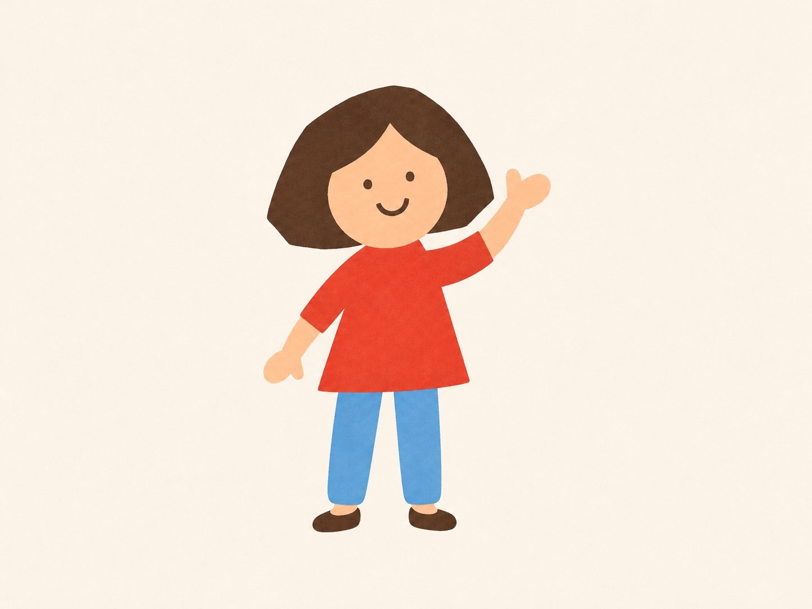
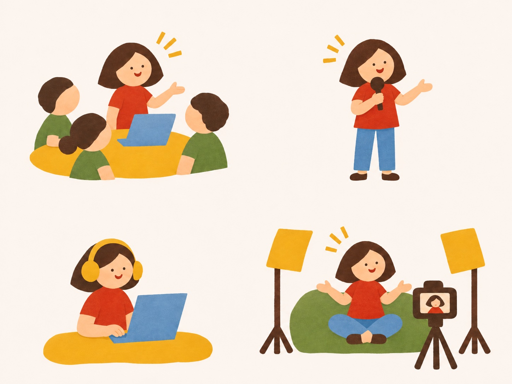
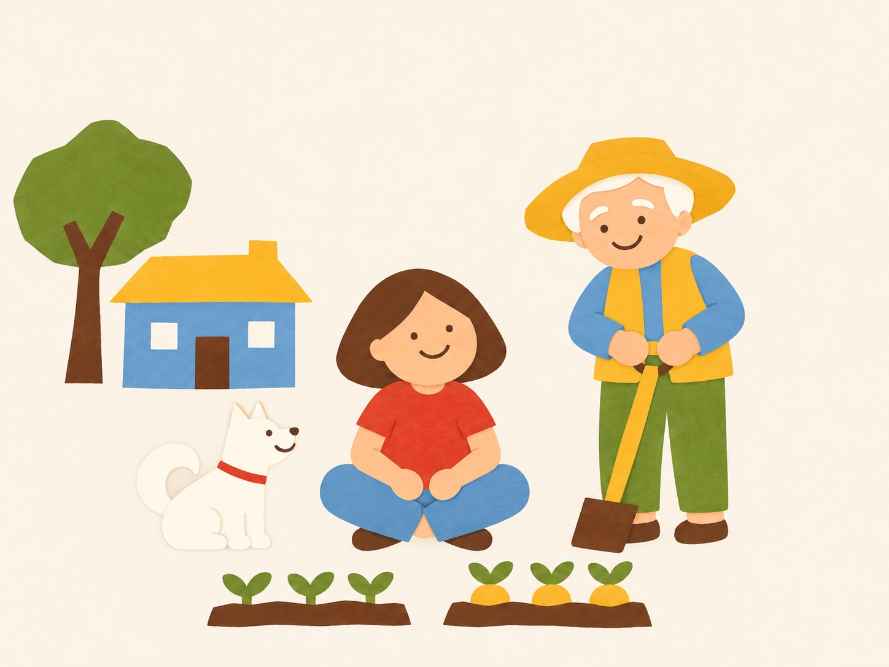
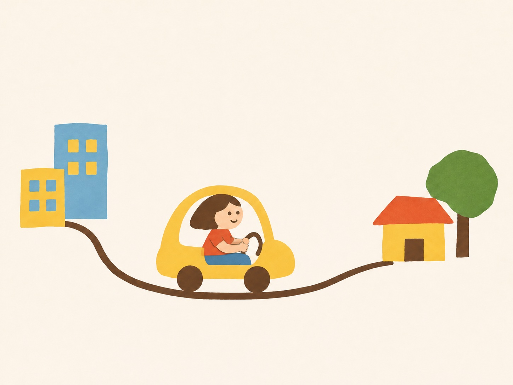
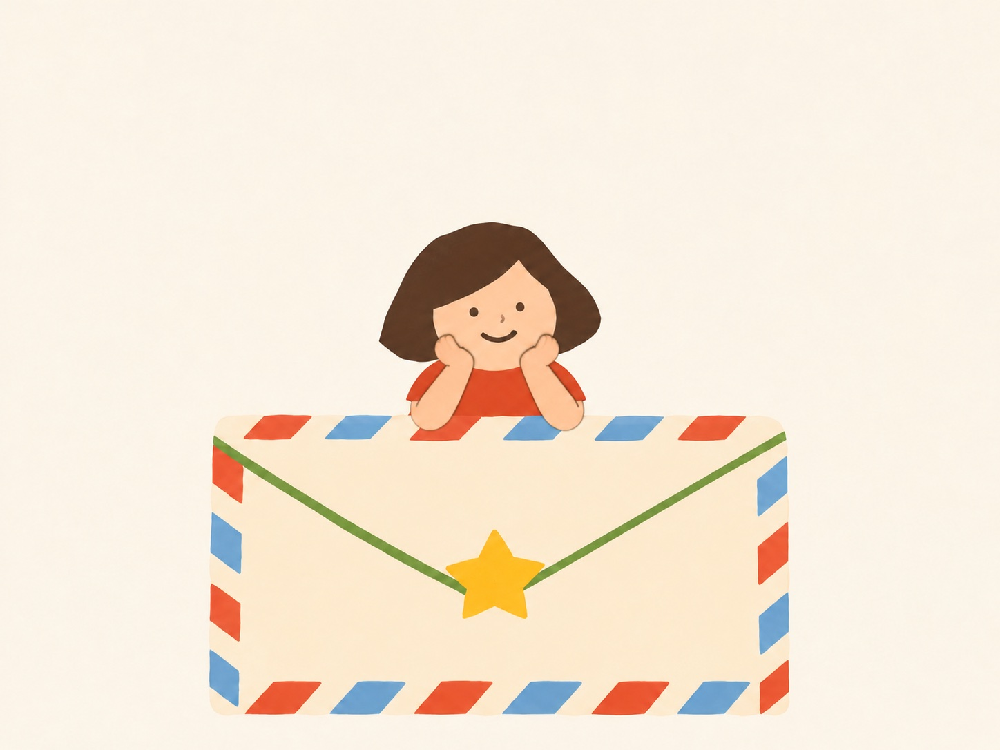
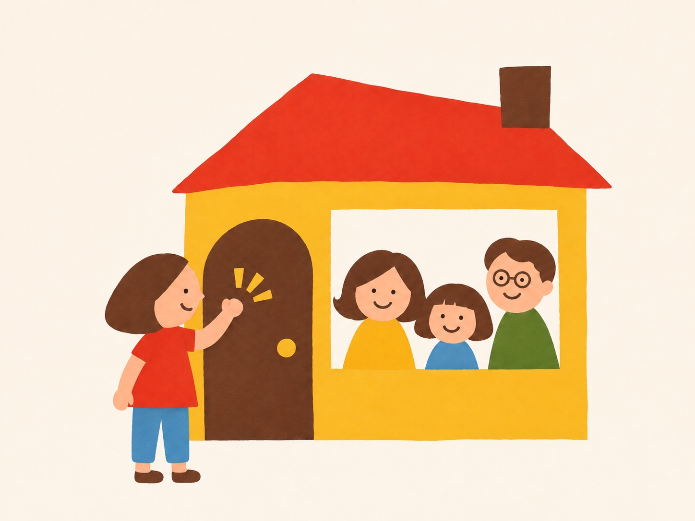
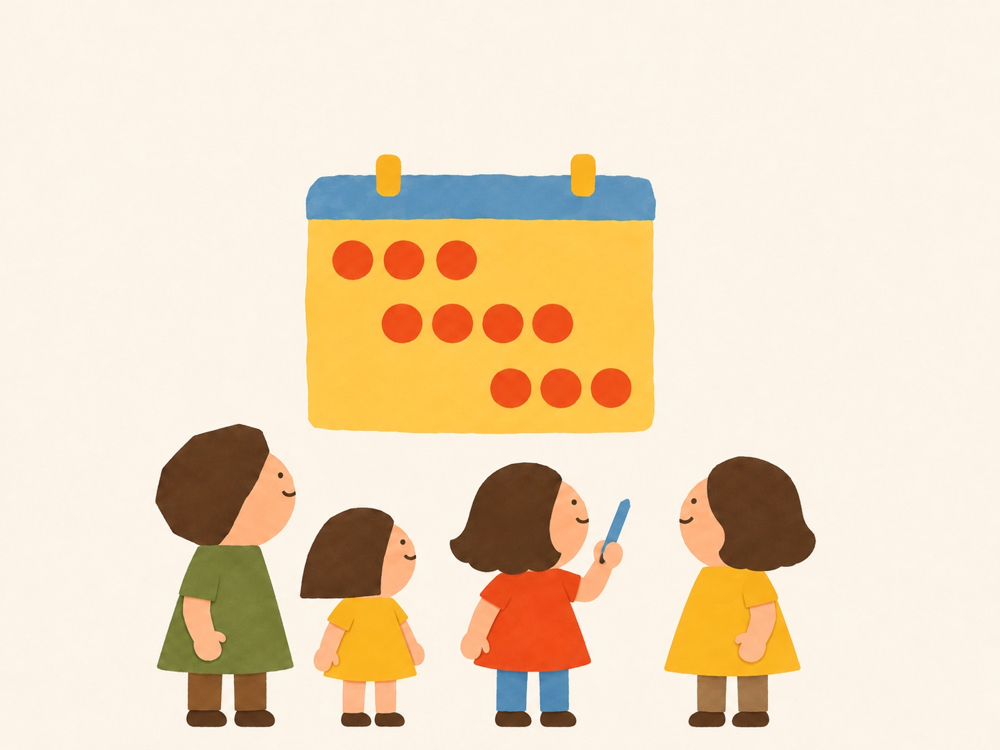
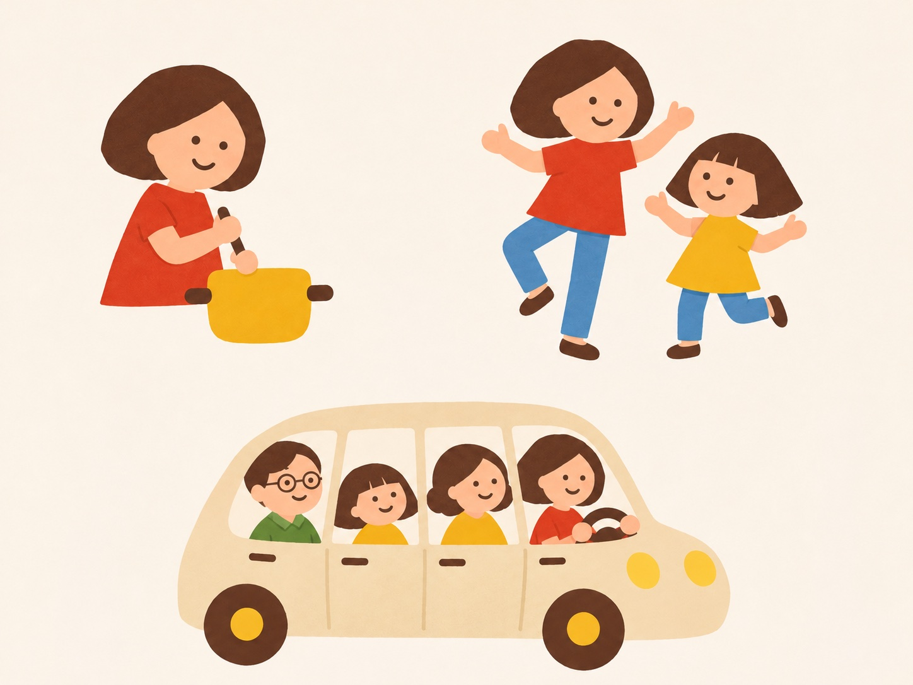
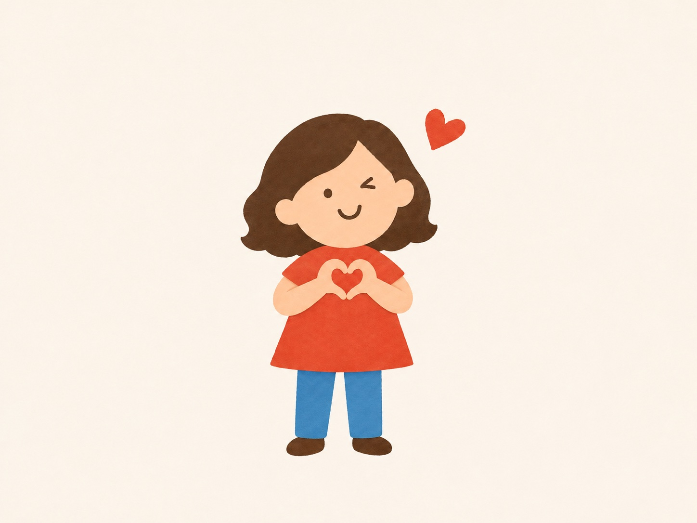
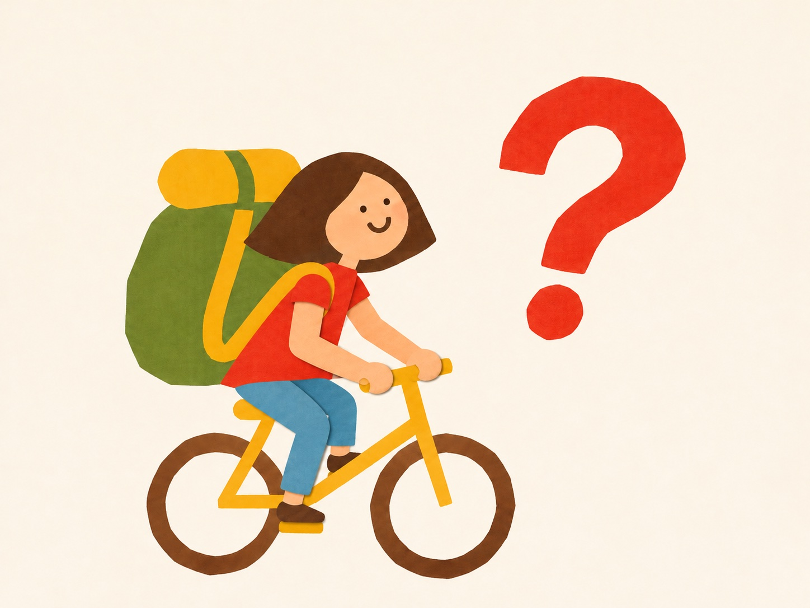

안녕하세요? 한지인입니다.
제가 이런 링크를 만든 것은, 여러분에게 제안하고 싶은 것이 있기 때문이에요!
제가 하는 이야기를 한번 들어보고 의견을 들려주세요.

안녕하세요? 한지인입니다.
제가 이런 링크를 만든 것은, 여러분에게 제안하고 싶은 것이 있기 때문이에요!
제가 하는 이야기를 한번 들어보고 의견을 들려주세요.

저는 브랜딩이라는 일을 합니다.
사실 근데 이게 무슨 일을 하는 지, 가족들은 알기가 쉽지 않아요. 우리는 일 얘기를 좀처럼 하지 않으니까요. 그 얘기를 먼저 조금 하자면…

그런데 이렇게 수십년동안 해온 브랜딩이라는 일 이외에 제가 죽을때까지 계속 유지하고 싶은 삶의 방식이 있는데요, 그건 바로 ‘흙과 식물, 동물이 있는 곳에서 자급자족하기’입니다.
그래서 2019년에 한동수 할아버지가 이주하실 수 있도록 돕고, 지금까지 강원도 집에서 있을 수 있는 만큼 지내면서 이것저것 마음과 시간, 돈을 쓰며 지내보았어요.

그런데 강원도와 서울을 2:1의 비율로 계속 오가면서 지내다보니 서울에서의 브랜딩 일도, 강원도에서의 시골 생활도, 애매한 상태로 계속 집중이 안되고 발전이 안되는 것 같아요.
게다가 서울과 강원도 둘다 꽤 돈이 들고, 오가는데 꽤 시간과 체력이 필요하죠. 물론 지금까지는 그럼에도 불구하고 그게 필요하다는 생각으로 지냈어요.
그런데 올 한 해를 지내면서 생각이 좀 바뀌게 되었습니다. 내가 가진 체력, 시간, 돈을 잘 쓰면서 원하는 목표를 이룰 수 있게 더 집중해야겠다고요!

그래서 여기부터 가람, 민하, 상훈에게 제안을 하는 내용입니다!

저는 생활의 기반을 강원도로 옮겨보려고 합니다! 그런데 브랜딩 일을 계속 할거에요. 온라인 업무의 비중을 높일 거에요.
근데, 그래도 미팅이나 강의처럼 오프라인 일들이 생길 수 있잖아요. 그럴 때, 세명이 지내는 집에서 잠시 지내도 될까요?

아마 당분간은 지금처럼 한달에 열흘 정도 서울에 일이 있을 가능성이 높아요.
요일은 랜덤이라 좀 부담스러울 수 있지만, 최대한 규칙적으로 만들어 볼 수도 있으니까 고민을 해보면 되구요.

소중한 가족의 평화로운 보금자리에 이런 제안을 하는 것이 막 쉬운 건 아니에요 :) 조심스러운게 사실인데~
지켜야 할 것들, 가족의 법칙 같은 것 알려주면 잘 지켜보면서 때때로 잼나는 일도 만들면서 지낼 수 있게 해주면 어떨까요?

이런 생활의 실험을 하는 궁극적인 목표는 일과 마음을 집중해서 자원을 모아서 시골에는 쾌적한 집과 밭을 짓고 도시에는 작고 아늑한 아지트를 만드는 것이에요.
그 과정을 앞으로 2-3년 정도 화이팅해보려고 한답니다. 그 과정에서 여건이 가능한 범위 안에서, 저를 도와주실 수 있을까요?
그럼~ 충분히 세 명이서 이야기 나누고, 이야기에서 생겨나는 고민있으면 알려주십쇼! 긍정적인 검토를 부탁드리며...후후

추가- 두발자전거도 같이 간다고 하면 장점이 될까요, 단점이 될까요?
여러분의 생각이 궁금해요!
